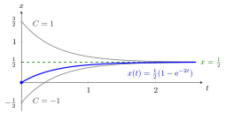

The left-hand side x′+px is not a derivative of anything simple; multiplying by μ turns it into the derivative of the product μx. Step 2 uses the product rule from differentiation rules and the chain rule for dtdeP(t)=P′(t)eP(t).
The two terms of the closed form have a meaning: e−P(t)x0 solves the homogeneous equationx′+px=0, and the integral is a particular solution that starts at 0, so the solution is homogeneous part plus particular part, as in the general solution of a linear ODE. For constant p=−a the formula reads x(t)=ea(t−t0)x0+∫t0tea(t−s)q(s)ds, the scalar form of the variation-of-constants formula that returns in Week 4 with the matrix exponential.
Common slips: forgetting to write the equation with coefficient 1 in front of x′ before reading off p; using e−P instead of eP; adding the constant C after dividing by μ instead of before.
Constant coefficients.x′+2x=1, x(0)=0. Take μ=e2t: (e2tx)′=e2t, so e2tx=21e2t+C and x=21+Ce−2t. From x(0)=0, C=−21: x(t)=21(1−e−2t).

The figure plots the general solution x=21+Ce−2t for C=1, C=−21 and C=−1. The constant C only shifts the decaying homogeneous part Ce−2t, so every curve approaches the equilibrium x=21=q/p; the initial condition x(0)=0 picks out the highlighted curve with C=−21.
Variable coefficient.x′+t1x=t on t>0. Here P(t)=lnt and μ=t: (tx)′=t2, so tx=3t3+C and x(t)=3t2+tC. Check: x′+tx=32t−t2C+3t+t2C=t.
With integration by parts.x′−x=t. Here μ=e−t and (e−tx)′=te−t. Integration by parts gives ∫te−tdt=−te−t−e−t+C, so x(t)=−t−1+Cet. Check: x′=−1+Cet and x+t=−1+Cet.
Aliases: integrating factor method
Keywords: mu(t)=e^{P(t)}, x'+p(t)x=q(t), linear first-order equation, variation of constants, product rule
Symbols: element of, integral, mu
Last updated: 14 October 2026 16:25
Integrating FactorParticular Solution of an Inhomogeneous Linear ODEFirst-Order Differential EquationAntiderivativeDifferentiation RulesChain RuleGeneral Solution of a Linear ODEEquilibrium of a Differential EquationMatrix Exponential